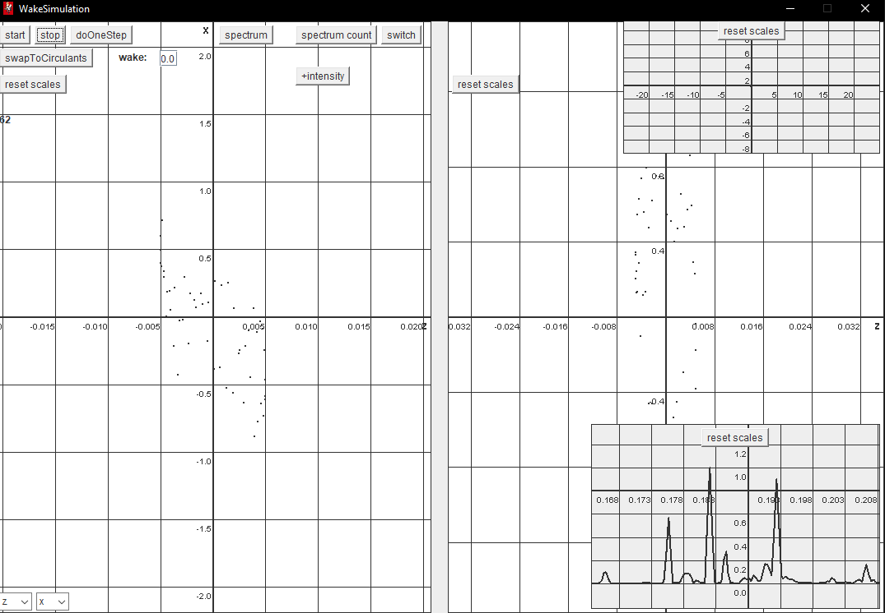
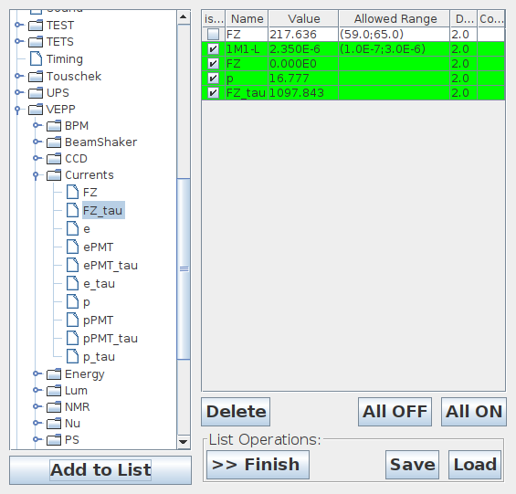
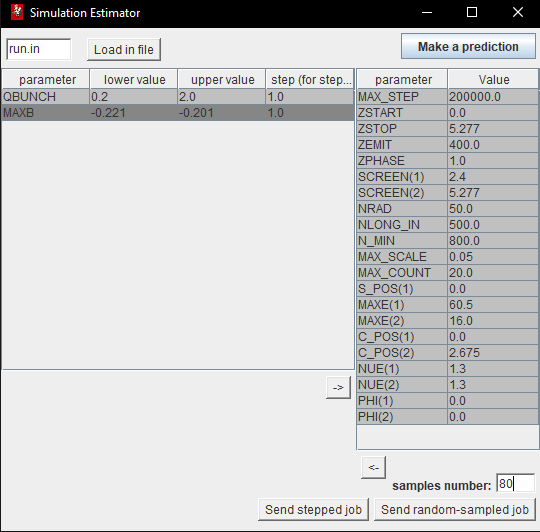

My programming projects:
-

My first useful code project. Made in Java swing/awt.
This is a tracking program. It simulates the beam dynamics in circullar colliders with 2 beams. It is able to take wake fields, betatron coupling and collision-with-angle into account, plot spectrum dependency on beam intencity, and also it is interactive. -

My second code project. Made in Java swing/awt.
I've rewrote the old alarmer program for VEPP-2000. It monitors various collider properties and sounds the alarm when they exceed their limits.
Currently is constantly used during the VEPP-2000 operation. -

My third code project. Made in Java swing/awt and Python
This program allows to scan the input simulation parameters conveniently, train a ML algorithm (user can choose), and make the fast output parameter predictions.
Made for the PITZ DESY group.